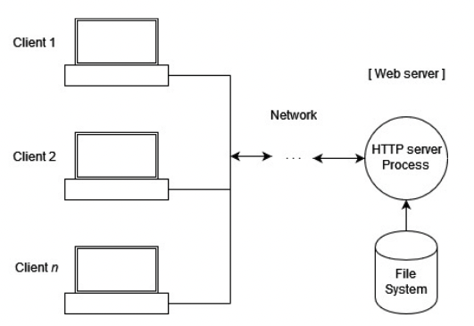

Svolgimento traccia 3: web server
Specifiche:
Si immagini di dover realizzare un Web Server in Python per una agenzia di viaggi.
I requisiti del Web Server sono i seguenti:
- Il web server deve consentire l'accesso a più utenti in contemporanea
- La pagina iniziale deve consentire di visualizzare la lista dei servizi erogati dall'agenzia di viaggi e per ogni servizio avere un link di riferimento ad una pagina dedicata presente nella stessa working directory della pagina principale
- Nella pagina principale dovrà anche essere presente un link per il download di un file pdf da parte del browser
- Si chiede di autenticare gli utenti nella fase iniziale della connessione.
- L'interruzione da tastiera (o da console) dell'esecuzione del web server deve essere opportunamente gestita in modo da liberare la risorsa socket.